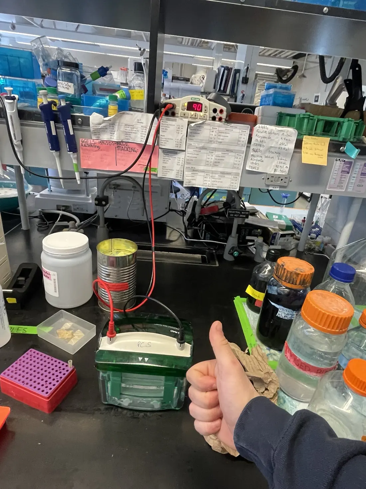
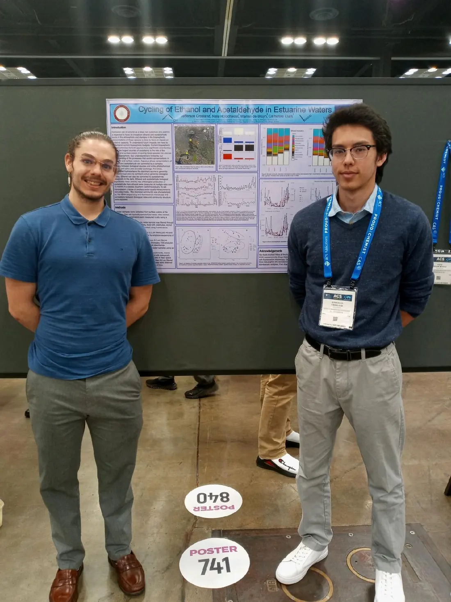
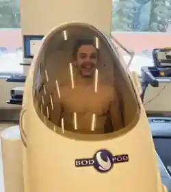

Fitness Trainer — EXOS at Google
South Lake Union campus, Seattle. Coaching and fitness training in a corporate wellness setting.
Coach / Research coauthor / Founder
I coach strength and fitness, teach exercise science, and study how people build and keep the ability to move well.
I’m Nate Holochwost, founder of NAV. I’m a NASM Certified Personal Trainer and coach at Blinnergy in Woodinville and with EXOS in Seattle. My background spans anatomy teaching, long-term care, and research in environmental chemistry and health policy.

I started college thinking I might become a marine biologist. Studying kinesiology drew me further into the science of the human body, and I went on to earn degrees in kinesiology and biology and a minor in chemistry at Western Washington University. I discovered how much I enjoy teaching while leading anatomy and physiology lab sections as an undergraduate teaching assistant.
During the COVID-19 pandemic, I worked as a nursing assistant in long-term care, helping residents with everyday activities and mobility. Later, as a clinical aide, I supported clinic operations and shadowed physical therapists. I’ve also competed in powerlifting and volunteered as a youth lacrosse coach. Those experiences in care, sport, and coaching drew me to questions about how people maintain mobility over time.
Through NAV, I want people to understand why their training is set up the way it is and how to make better decisions as their goals and circumstances change. My research interests include how joints and connective tissues respond to load.
Coach Nate · Original strength footage
Watch Coach Nate's barbell back-squat sets: three at 405 lb and one at 415 lb × 2 (blue shorts). Swipe on mobile, scroll horizontally, or use Previous and Next. All videos are silent.
Strength showcase · Four original videos
All set loads were confirmed by Coach Nate. The blue-shorts clip is 415 lb × 2; the other three clips are 405 lb. Rep counts for the 405 lb clips are not specified.
Swipe or scroll for more · Select play on any video · Audio removed
More from Coach Nate · Instagram + YouTube
Six original Instagram reels plus three additional educational YouTube Shorts. Swipe or use the controls to browse, and choose a video to load it.
Instagram and YouTube videos load only when selected. Loading a video shares data with the selected provider (Instagram or YouTube); playback and sign-in requirements depend on that provider. The direct links remain available if an embed does not work.
Coach Nate · Original lessons
Long-form lessons on anatomy, scientific reasoning, and muscle contraction. No gaming content. These creator-led recordings are educational drafts, not independently peer-reviewed instruction.
Editorial clarification: the sternum belongs to the axial skeleton; the hip bones form the appendicular pelvic girdle. Classroom terminology and drawings should be cross-checked with a current anatomy reference.
Watch directly on YouTubeEditorial clarification: the talk uses an informal analogy for how disciplines relate; science, mathematics, philosophy, and theology are distinct domains rather than a universally agreed linear hierarchy.
Watch directly on YouTubeEditorial clarification: a single −55 mV threshold does not apply to every excitable cell. In the cross-bridge cycle, ATP binding facilitates myosin detachment from actin, while ATP hydrolysis and product release support subsequent force generation.
Watch directly on YouTubeYouTube players load only when clicked. Viewing shares data with YouTube. This section highlights original educational recordings; scientific details may require updates or corrections against current evidence.
Independent project · WWU
In Catherine Clark’s lab, we studied how bacteria and dissolved organic matter might influence what happens to ethanol and acetaldehyde in estuarine water.
Jefferson Crosland, Nate Holochwost, Warren de Bruyn, Catherine Clark · Western Washington University / Chapman University.
The project studied the balance of biological degradation and production of ethanol and acetaldehyde in Southern California estuarine waters, with water-quality observations, microbial characterization, and chemical measurements. The poster reports biological contributions and discusses implications for exchange with the atmosphere.
View original research poster (PDF) →

Independent scholarly output · 2024
Our study used Michigan Medicaid claims to examine patterns of contraceptive care among young people in foster care.
Day, A. G., Paul, R., Holochwost, N. G., & Benjamin, S. N. (2024). Child and Adolescent Social Work Journal.
Read the published article and author credits →
I reviewed prior research, helped develop tables, and contributed to writing and revising the manuscript with the University of Washington School of Social Work team.
Separate observational experience · University of Washington
I shadowed researchers in a university lab to learn what biomedical research looks like day to day.
During my UW lab shadowing, I observed mammalian cell-culture work. I’m interested in how cartilage cells respond to mechanical loading, how joint tissues change after injury or with aging, and how regenerative medicine might help restore mobility. Read more about my research interests.
Community science · Independent volunteering
SoundBio Lab is a community biology makerspace in Seattle where I volunteered.
I helped develop biotechnology curriculum for community learners. That gave me another way to teach science, this time through hands-on biotechnology education.

Athletics · Separate from scientific work
I’ve played lacrosse and volunteered as a youth lacrosse coach.
I coached youth lacrosse from 2018 to 2019 and have also competed in powerlifting. See my lifting videos.
NAV & professional links
Fast access to the coaching business, the product, education, and original research.
March 2023

Curriculum vitae
Employment dates and cumulative hours are self-reported in the November 9, 2026 CV and are not independently audited timesheets. See complete public résumé →
South Lake Union campus, Seattle. Coaching and fitness training in a corporate wellness setting.
Woodinville. Individualized strength coaching and group fitness instruction.
Developing a coaching, software, and exercise-science education ecosystem.
Western Washington University under Dr. Catherine Clark.
University of Washington, research with Dr. Angelique Day.
WWU BIOL 348, under Professors Gregory Freedman and Jaci Scheer.
Education, service & clinical foundation
Scientific training and hands-on care experience inform my coaching philosophy without implying a medical-care service.
NASM Certified Personal Trainer. Prior credentials and training include nursing assistance, BLS, CPR, first aid, and responsive web design.

Fitness coaching is not clinical diagnosis or treatment.

See NAV coaching, education, and product development, or get in touch.